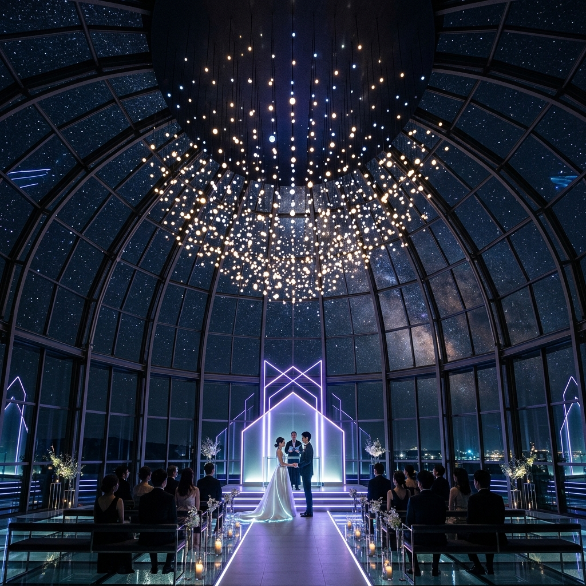

Light Aisle
입장 장면을 위한 라이트 연출.

입장 장면을 위한 라이트 연출.
야경이 보이는 돔형 글라스 공간.
애프터 파티까지 이어지는 무드.
선학컨벤션은 돔형 글라스 천장과 라이트 버진로드를 중심으로 설계된 야간 웨딩홀입니다. 입장, 서약, 퇴장 장면마다 조도와 배경 조명이 달라져 공연 같은 예식을 만들 수 있습니다.
최대 200명 규모의 돔형 홀입니다. 무드 라이트, LED 버진로드, 야경 커튼 오픈 연출을 활용해 야간 예식과 애프터 리셉션에 강합니다.
서울 강남구 테헤란로 120 루미에르 웨딩 12F
지하철 2호선 강남역 3번 출구에서 도보 6분, 야간 예식 하객 전용 주차 안내 제공.